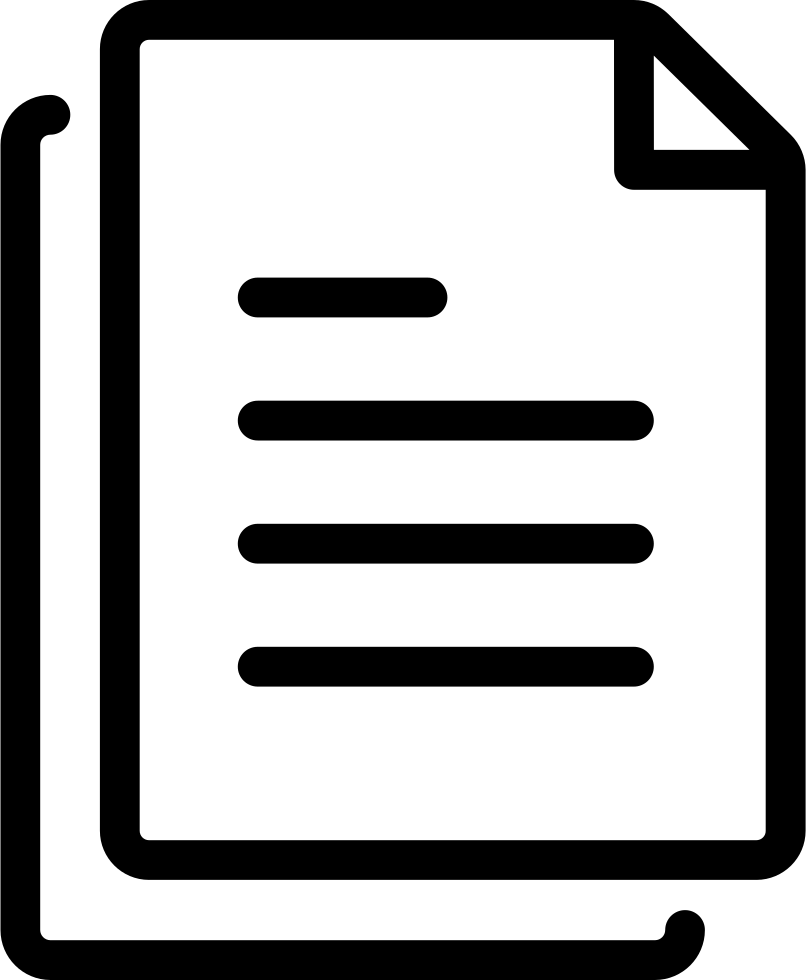

Tervetuloa!
Mahtavaa, että olet löytänyt tiesi portfoliooni! :) Näiltä sivuilta löydät tiedot koulutustaustastani ja työhistoriastani. Täältä pääset tarkastelemaan tekemiäni harjoitustöitä.

Yhteystiedot:
Sähköposti: mari409@gmail.compuhelin: 0451372735
Profiili